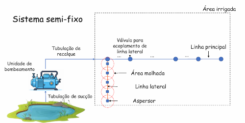
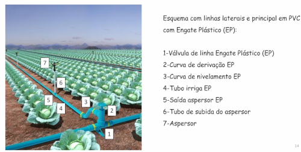

- Fixos Permanentes
- Fixos Temporários
- Semi-Fixos
- Portáteis
Nesse tipo de sistema, nenhum dos componentes é deslocado, sendo que a rede de tubulações geralmente é enterrada em toda a área irrigada. A irrigação pode ser realizada de forma sequencial em subunidades, o que facilita a automação. Apesar do custo de implantação ser relativamente alto, trata-se de uma solução robusta e versátil, podendo ser utilizada também no combate à geada e no resfriamento de ambientes. Com o aumento das restrições e dos custos relacionados à mão de obra, esse tipo de sistema tem sido cada vez mais utilizado.
Os componentes permanecem no campo durante o ciclo de cultivo, mas podem ser desmontados periodicamente entre os ciclos. A rede de tubulações cobre toda a área irrigada, permitindo uma boa eficiência, com flexibilidade moderada.
Nesse caso, o sistema de bombeamento, as linhas primárias e as de derivação são fixas — podendo ou não ser enterradas — enquanto as linhas laterais são móveis, equipadas com engates rápidos e deslocadas conforme a área a ser irrigada.
Todos os componentes do sistema, incluindo as tubulações, são móveis, o que permite grande flexibilidade na instalação e no uso. Em algumas situações, até mesmo o sistema de bombeamento é transportado junto com o restante do equipamento.
 